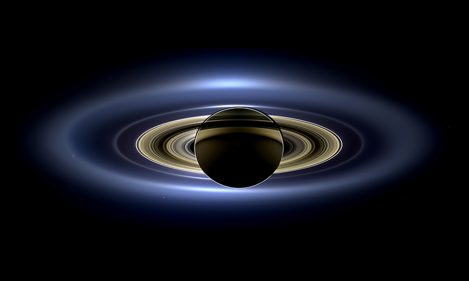
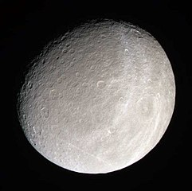
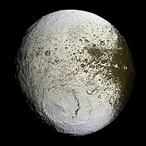
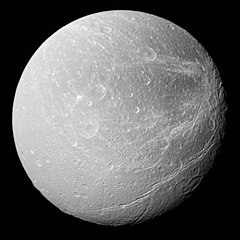
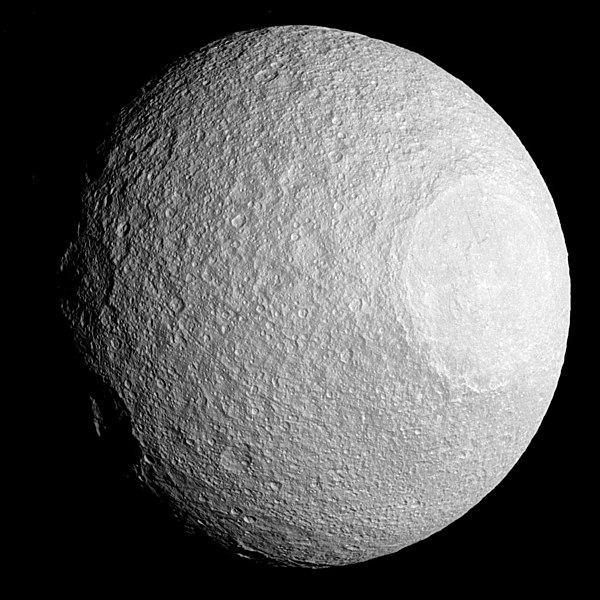
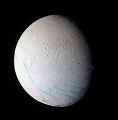
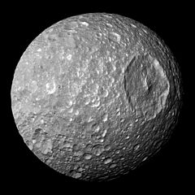

Saturn is the sixth from the Sun and second largest of the eight planets in the Solar System.
It is a gas giant like Jupiter composed mostly of hydrogen and helium.
In Roman mythology, Saturn is the god of time and wealth.
Of all the planets in the Solar System, Saturn is the most flattened at the poles, caused by rotation.
The atmosphere is less dynamic than that of Jupiter and has less features.
Such a feature is the hexagonal cloud at Saturn's north pole.
Saturn is known for it's prominent rings composed of ice, rock and dust.
There are 83 known satellites known to orbit the planet, 53 of them are named.
The biggest of those moons is Titan, which is bigger than Mercury.
Other notable satellites are Rhea, Iapetus, Dione, Tethys, Enceladus and Mimas.
Within the rings are also numerous tiny moonlets.
Four missions visited the Saturn system, the latest of which was Cassini-Huygens.
Name
Saturn is named after the Roman god of wealth, time and agriculture, father of Jupiter.
In Greek, the planet is named "Cronos" (Κρόνος) after the Greek analogue of Saturn.
The ancient Greek name was Phainon (Φαίνων).
The Hindu god representing the planet is Shani (शनि).
In Chinese the planet is known as "earth star" (土星) and the name is also used in other Sinosphere countries (countries culturally influenced by China).
Orbit and rotation
The average distance from the Sun is 9 AU.
The perihelion and aphelion distances are, respectively, 9.195 and 9.957 AU
It takes Saturn 10,759 Earth days to finish one revolution around the Sun.
The rotation period of Saturn is different all across the surface.
Around the equator and the poles, Saturn has a rotation period of 10h 14m 00s.
Across the other latitudes, the period is 10h 38m 25.4s.
The internal rotation period is around 10h 39m 22.4s.
Saturn has an axial tilt of 26.73°.
Physical characteristics
Shape and size
Saturn is an oblate spheroid with an average radius of about nine and a half times that of Earth.
It is the most flattened of all the planets at 9.8%.
Internal structure
Saturn's structure is similar to Jupiter - the core is composed of silicates (rock), surrounded by metallic hydrogen.
The interior contains liquid hydrogen and the outer atmosphere is gaseous.
It is suggested that diamond rains occur in the interior of giants, including Saturn.
A hexagonal cloud at the north pole of Saturn
Atmosphere
The outer atmosphere contains 96.35 hydrogen and 3.25% helium.
Trace amounts of ammonia, acetylene and hydrocarbons have been detected.
Saturnian features in the atmosphere like bands and storms are less aparent than those on Jupiter.
Clouds on Saturn consost of different elements based on their latitude.
Upper cloud layers feature ammonia ice clouds, while lower layers contain water ice and ammonium hydrosulfide ice clouds.
At the lowest layers, water and ammonia droplets in aqueous solution form at 10 - 20 bar.
Storms on Saturn are short-lived, an example is a so-called "Great White Spot".
Vortexes persist at the poles.
The one at the north pole is hexagonally-shaped and the south pole reaches -122 °C, far warmer than the average -185 °C.

Rings of Saturn, seen by the Cassini orbiter
Ring system
The Saturnian rings are the most prominent and most extensive, first seen by Galileo Galilei and identified by Cristiaan Huygens.
They are composed predominantly of water ice, tholin impurities and amorphous carbon.
The main rings are D Ring, C Ring, B Ring, Cassini Division, A Ring and the thin F Ring.
Other minor outer rings are named after satellites orbiting them.
Moons
There are 83 moons known to orbit Saturn.
The earliest discovered ones were named after Titans and Giants from Greek mythology.
Subsequent moons were named after other Greek mythological figures, Celtic and Inuit gods and Norse ice giants.
The biggest moon is Titan, a satellite bigger than the planet Mercury.
Other round moons are Rhea, Iapetus, Dione, Tethys, Enceladus and Mimas.
Out of the irregularly-shaped satellite, Hyperion is the largest and Phoebe is the most massive.
There are satellites like Atlas, Pan and Daphnis that are refered to as shepherd moons.
They have distinct equatorial ridges formed from clearing Saturn's rings.
Titan
Titan
Titan is the biggest satellite orbiting Saturn and is one of two satellites bigger than the planet Mercury, the other being the Jovian moon Ganymede.
Titan has a thick orange athmosphere composed mostly of nitrogen and methane.
Liquid methane lakes are concentrated around the poles, the only possible spots on the surface for them to form.
The biggest lakes are Kraken Mare and Ligeia Mare.

Rhea
Rhea
Rhea is the second largest moon of Saturn.
The surface is heavily cratered and has some fractures (chasmata) similar to other cratered planetary bodies.
It is hypothesised that Rhea might have a tenuous ring system.
If confirmed, this would mark the first discovery of rings around a moon.

Iapetus
Iapetus
Iapetus is the third biggest moon of Saturn.
It is composed mostly of ice and has different coloration on both hemispheres.
A mountain ridge along the equator is still unexplained, but one suggestion is that it might have been a collapsed ring system.

Dione
Dione
Dione is the fourth biggest Saturnian moon.
Similar to Rhea, Dione is heavily cratered, but features more chasmata and fossae (ridges).
Dione has two trojans, which are also moons of Saturn - Helene and Polydeuces.

Tethys
Tethys
Tethys is the fifth biggest satellite of Saturn.
It is an icy body and has one of the biggest craters on planetary bodies in the Solar System - Odysseus.
Just like Dione, Tethys has two trojans that orbit Saturn - Telesto and Calypso.

Enceladus
Enceladus
Enceladus is the sixth biggest moon of Saturn.
It is composed mostly of ice water.
Apart from craters, ridges and fractures, it has numerous geysers that shoot water vapors into space, part of which falls back as snow.
It is suspected that liquid water ocean is underneath the ice crust.
The future mission Dragonfly is planned to search for life on Enceladus.

Mimas
Mimas
Mimas is the smallest of the seven gravitationally-rounded moons of Saturn.
It is smaller than the irregularly-shaped moon of Neptune Proteus.
A distinctive feature is the crater Herschel, named after the discoverer of Mimas.
The moon resembles the fictional Death Star in Star Wars.
Early observations
The planet is one of the planets known in ancient times.
Galileo was the first to look through a telescope at the planet.
He was unable to resolve Saturn's rings, thinking they were two moons.
Cristiaan Huygens used a telescope with greater magnification.
He was the first to distinguish the ring system of Saturn and discovered the biggest moon - Titan.
Giovanni Domenico Cassini discovered four more moons - Iapetus, Rhea, Tethys and Dione.
William Herschel discovered the last two round moons - Mimas and Enceladus.
The first irregularly shaped satellite to be discovered was Hyperion and the first irregularly orbiting was Phoebe.
Exploration
NASA's first mission to Saturn was Pioneer 11, which made the a flyby of Saturn in September 1979, when it passed within 20,000 km of the planet.
Images were taken of the planet and a few of its moons, at a resolution too low to discern any surface detail.
The spacecraft also studied the planet's rings, revealing the thin F-ring.
The Voyager 1 probe managed to send back the first high-resolution images of the planet, its rings and satellites.
Surface features of various moons were seen for the first time.
Voyager 1 performed a close flyby of Titan, studying the atmosphere of the moon.
The thickness of the atmosphere prevented surface details to be revealed.
A year later Voyager 2 passed the Saturn system, collecting further information about the planet.
Both missions discovered new satellites around Saturn.
ESA joined NASA to launch the Cassini-Huygens spacecraft.
Cassini completed two flybys around Titan before releasing the Huygens lander.
Discoveries during the mission were evidences of liquid water beneath the Enceladus surface and geysers, hydrocarbon lakes on Titan and new satellites of Saturn.
Proposed missions include a proposed Saturn entry probe and Dragonfly, which will search for life on Titan and Enceladus.